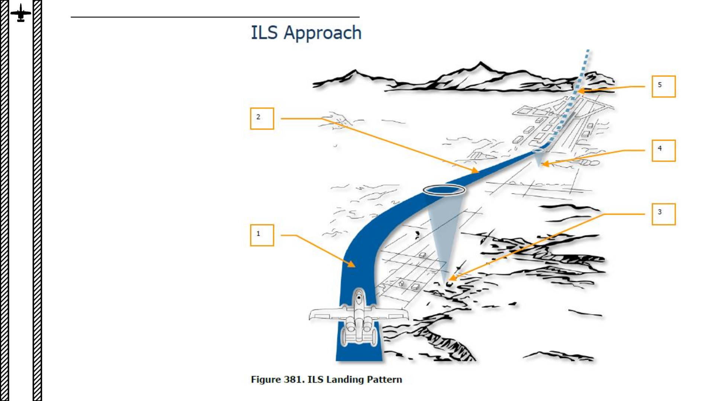

<div id="pf1f7" class="pf w0 h0" data-page-no="1f7"><div class="pc pc1f7 w0 h0"><div class="c x0 y0 w1 h0"><div class="t m0 x228 h1 y1 ff1 fs0 fc0 sc0 ls2 ws0">503</div><div class="t m0 xed hd y480 ff7 fs7 fc1 sc0 ls23 ws0">13 <span class="ffa ls0">–<span class="_"> </span><span class="ff7">ILS (INSTRUMENT LANDING S<span class="_ _0"></span>Y<span class="_ _0"></span>STEM) TUT<span class="_ _6"></span>ORIAL</span></span></div><div class="t m0 x13 h2f y14d7 ff1 fsf fc1 sc0 ls97 ws0">1.<span class="_ _68"> </span><span class="ls0">ILS ap<span class="_ _0"></span>proach </span></div><div class="t m0 x13 h2f y14d8 ff1 fsf fc1 sc0 ls97 ws0">2.<span class="_ _68"> </span><span class="ls0">Final Appr<span class="_ _0"></span>oach</span></div><div class="t m0 x13 h2f y14d9 ff1 fsf fc1 sc0 ls97 ws0">3.<span class="_ _68"> </span><span class="ls0">Out<span class="_ _0"></span>er ILS mark<span class="_ _6"></span>er</span></div><div class="t m0 x13 h2f y14da ff1 fsf fc1 sc0 ls97 ws0">4.<span class="_ _68"> </span><span class="ls0">Inner ILS <span class="_ _0"></span>mark<span class="_ _0"></span>er</span></div><div class="t m0 x13 h2f y11b1 ff1 fsf fc1 sc0 ls97 ws0">5.<span class="_ _68"> </span><span class="ls0">Missed Appr<span class="_ _0"></span>oach</span></div><div class="t m1 x8 h9 y36 ff8 fs7 fc1 sc0 ls0 ws0">PART 16 </div><div class="t m1 x8 h9 y1058 ff9 fs7 fc1 sc0 ls0 ws0">–<span class="_ _13"> </span><span class="ff8">NAVIGATION &amp; ILS LANDING</span></div><div class="t m1 x9 ha y38 ff8 fs0 fc1 sc0 ls0 ws0">A-10C </div><div class="t m1 xa hb y38 ff8 fs5 fc1 sc0 ls0 ws0">WARTHOG</div></div></div><div class="pi" data-data='{"ctm":[1.000000,0.000000,0.000000,1.000000,0.000000,0.000000]}'></div></div>
